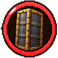
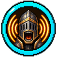
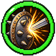
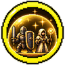

Templare
Incassa, provoca e protegge
Una classe per personaggio: per cambiarla serve il Reset. Si parte dal primo nodo e dal tronco, poi si sceglie un ramo; si può passare in un ramo vicino una volta sola, e alla fine si prende una sola Abilità Finale.
Primo nodo
+6 vita, +100% cure, +50% contraccolpo, +2 armatura; -10% velocità di corsa, -15% danno in mischia, -50% danno a distanza. I tuoi scudi non si rompono mai. Puoi usare la Protezione fino a III sulle armature (le altre classi molto meno). Contro i giocatori fai il 20% di danno in meno.
Tronco
+2 vita massima (1 cuore).
Cure ricevute: +5%.
Rami

+2 vita massima (1 cuore).
+3 punti armatura.
Prendi il 10% di danni in meno da tutto.
Nodo proprio del ramo: +3 armatura, ma ti muovi il 5% più piano. Prenderlo chiude i punti d'incontro: resti nel tuo ramo.
Per 8 secondi prendi il 60% di danni in meno da davanti. Ricarica 90 s.
Strada Fortezza. Non vieni spinto via dai colpi.
Strada Fortezza. Scatta da sola: sotto il 25% di vita prendi il 50% di danni in meno per 6 secondi. Ricarica 3 minuti.
Strada Scudo. Lo scudo si alza subito, senza il ritardo normale.
Strada Scudo. Le frecce che pari tornano verso chi le ha tirate.

I nemici che colpisci vengono spinti indietro il 5% in più.
+2 vita massima (1 cuore).
I mob entro 8 blocchi senza un bersaglio scelgono te prima degli altri giocatori.
Nodo proprio del ramo: I mob che ti vedono entro 10 blocchi puntano te prima degli altri. Prenderlo chiude i punti d'incontro: resti nel tuo ramo.
Tutti i mob entro 10 blocchi ti puntano per 6 secondi. Ricarica 2 minuti.
Strada Esca. Prendi il 3% di danni in meno per ogni mob che ti punta, fino al 15%.
Strada Esca. I boss che ti puntano ti fanno il 10% di danno in meno.
Strada Rissa. L'Urlo di sfida rallenta i mob per 2 secondi.
Strada Rissa. +5% danno per ogni mob che ti punta, fino al 25%.

I tuoi colpi in mischia fanno il 2,5% di danno in più.
I nemici che colpisci vengono spinti indietro il 5% in più.
Chi ti colpisce in mischia prende 1 danno.
Nodo proprio del ramo: Chi ti colpisce in mischia prende il 10% del danno che ti fa. Prenderlo chiude i punti d'incontro: resti nel tuo ramo.
Dopo una parata il tuo prossimo colpo fa il 40% di danno in più e rallenta il nemico per 1 secondo.
Strada Spinoso. Le spine fanno 2 danni invece di 1.
Strada Spinoso. Chi ti colpisce in mischia prende fuoco per 2 secondi.
Strada Martello. +10% danno con martelli e mazze.
Strada Martello. Dopo aver preso 30 danni, il tuo prossimo colpo libera un'onda che fa 6 danni ai nemici intorno.

Cure ricevute: +5%.
La fame scende il 5% più piano.
I compagni entro 6 blocchi da te prendono il 3% di danni in meno.
Nodo proprio del ramo: Ogni compagno entro 6 blocchi ti dà +1 armatura, fino a +4. Prenderlo chiude i punti d'incontro: resti nel tuo ramo.
Per 6 secondi il compagno di gilda più vicino (o tu, se sei solo) prende il 30% di danni in meno. Ricarica 90 s.
Strada Paladino. Le pozioni di cura su di te curano il 20% in più.
Strada Paladino. I compagni entro 6 blocchi rigenerano mezzo cuore ogni 10 secondi.
Strada Sentinella. I mob che puntano un compagno entro 16 blocchi brillano.
Strada Sentinella. Quando un compagno vicino scende sotto il 30% di vita ti porti accanto a lui. Una volta ogni 2 minuti.
Punti d'incontro
Nodi condivisi tra due rami vicini: da qui si può saltare nell'altro ramo.
Dopo aver preso 3 colpi in 3 secondi, il tuo prossimo colpo fa il 50% di danno in più. È l'alternativa al nodo proprio del ramo: da qui continui nel tuo ramo o passi in quello accanto, una volta sola in tutto l'albero.
Ogni mob o boss che colpisci (anche con frecce e incantesimi) si gira contro di te per 5 secondi, e con lui tutti i mostri entro 6 blocchi da te, anche se altri li colpiscono. Ogni colpo rinnova i 5 secondi. È l'alternativa al nodo proprio del ramo: da qui continui nel tuo ramo o passi in quello accanto, una volta sola in tutto l'albero.
Il 20% dei danni presi da un compagno di gilda entro 8 blocchi li prendi tu al posto suo. È l'alternativa al nodo proprio del ramo: da qui continui nel tuo ramo o passi in quello accanto, una volta sola in tutto l'albero.
Abilità Finali
Se ne sceglie una sola.
Ricevi il Martellone, la tua arma (15 danni): colpisce forte, passa parte dell'armatura e in mano non hai il malus del Templare in mischia. Impugnandolo rigeneri il 30% di vita in più. Col sinistro fa una combo di tre colpi (15, 15 e 21 danni); col destro schiacci il suolo (6 danni): tutto trema e si apre un terremoto entro 5 blocchi (5 danni ogni secondo e un quarto per 6 secondi) (ricarica 1 minuto e mezzo).
Per 15 secondi diventi un colosso di pietra, molto più grosso e fermo dove sei: vita doppia, +50% armatura, non vieni spinto via e tutti i mob entro 20 blocchi puntano solo te. Puoi attaccare e parare. Ricarica 5 minuti. Sblocca anche la Protezione IV sulle armature.
Per 10 secondi tu e i compagni entro 8 blocchi prendete il 40% di danni in meno. Ricarica 6 minuti. Sblocca anche la Protezione IV sulle armature.